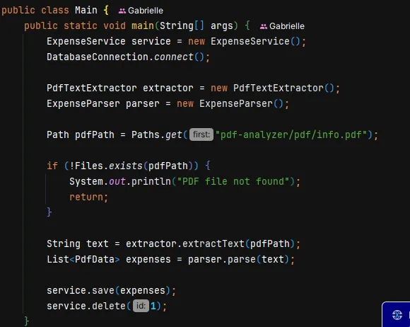
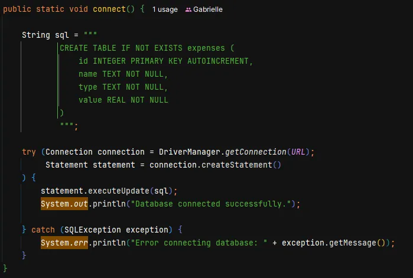

PDF ANALYZER CORE
O sistema recebe documentos em formato PDF, faz a leitura autônoma das informações e organiza os dados financeiros de forma estruturada e confiável. Ideal para otimizar auditorias e fluxos de contabilidade, a plataforma centraliza os dados extraídos em um banco seguro e deixa o terreno pronto para a exibição de dashboards gerenciais.
ABOUT_PROJECT
Este software foi concebido para transformar dados frios e espalhados em relatórios PDF em inteligência estratégica de negócios. O usuário submete o arquivo ao sistema e o motor do backend faz todo o trabalho pesado de validação: lê o documento, interpreta o que é uma despesa válida, descarta ruídos textuais e salva as informações de forma limpa.
Para garantir a confiabilidade, o sistema valida a integridade de cada registro antes de guardá-lo no banco de dados. O projeto contém a arquitetura em camadas permite que o sistema funcione perfeitamente como um serviço de segundo plano ou evolua rapidamente.
TECH_STACK
- Java 21
- Apache PDFBox
- SQLite
- JDBC
- Jackson
- JavaFX
ARCHITECTURE
- DTO Layer
- Service Layer
- Repository Pattern
- Database Layer
- Separação de processamento e persistência
FEATURES
- -> Extração de texto PDF
- -> Processamento de documentos
- -> Parsing de dados financeiros
- -> Conversão texto em objeto Java
- -> Persistência em banco SQLite
- -> Operações CRUD de despesas
DATA_FLOW
- 1. Upload do Documento: O relatório de despesas é inserido no fluxo da aplicação.
- 2. Leitura Automatizada: O sistema faz a varredura completa do PDF sem depender de conversores externos.
- 3. Higienização de Dados: O texto confuso e desorganizado é limpo, validado e transformado em despesas reais.
- 4. Armazenamento Seguro: As informações tratadas são salvas de forma organizada, prontas para futuras consultas e análises.
